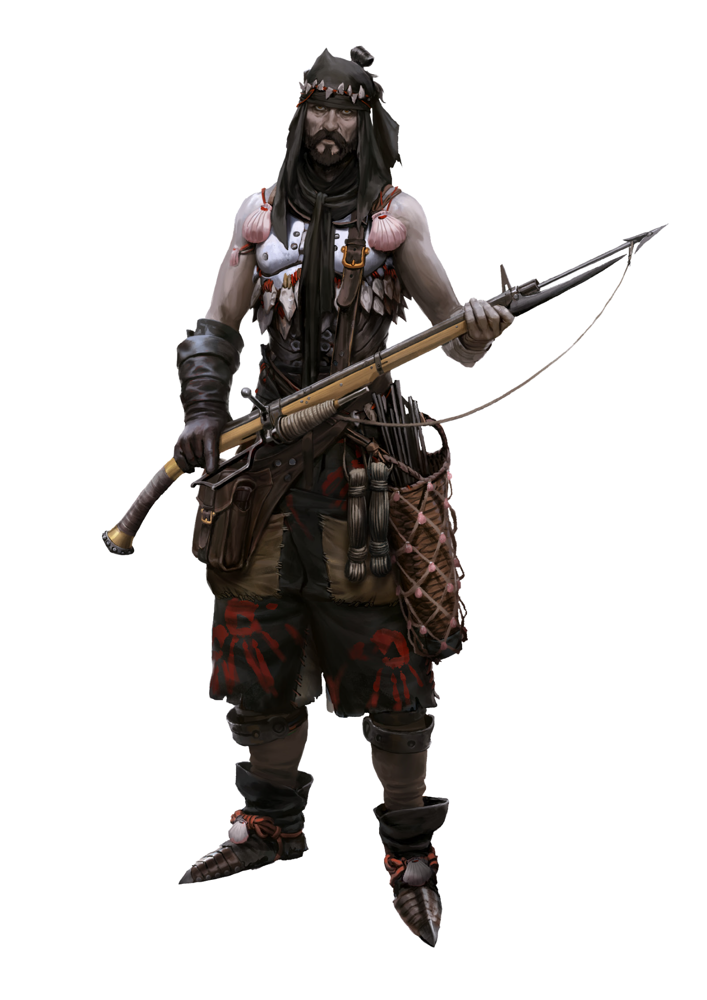

CLAN DOSSIER
Bordenoir
For the Bordenoir, origin is not important, the only thing that matters is skill.
Clans of the Rhône pp. 13–15

MELTING POT
Briefing
For decades, the Bordenoir have collectively tried to save their home. Once they were only a handful of Clans hailing from the same area, pressed together like sheep, circled by lions, crows, and worse. Today, they are like a human power plant behind a black shield wall. Whoever wants to join them is welcome. For the Bordenoir, origin is not important, the only thing that matters is skill.
Melting Pot
There is a circle of soot in Franka, Northeast of the Pyrenees. Anything within this black border is the territory of the Bordenoir. It is a melting pot in which the Frankans, Hybrispanians, and Africans must leave their differences and prejudices behind, for it is the Bordenoir who shape and enforce the laws of this area. From Perpignan, they watch their domain with protective eyes. Some of them sail the Mediterranean on colorful boats, others prospect the best silver of the Pyrenees. On sweltering evenings, they sit together in the light of the sinking sun, telling stories, playing Sataranji, and counting their Dinars.
Our Sea
For the Bordenoir, the Mediterranean is a cornucopia from which they have drawn for centuries. They have turned the wrecked ships that once blocked the harbor basin into a protective ring of steel. Now, they put to sea in dhows with black sails to cast their nets. However, the sea is full of terrors. Tiger sharks, pirates, currents, smugglers, fugitives – there is an abundance of potentially deadly threats.
This is why the Faucons, the pirate hunters of the Bordenoir, fight daring battles against monsters of all sorts, animal and human alike. They are the wardens of the black border, safeguarding land and sea alike to sustain Perpignan and divert any damage from the city.
Every single combat demands a high blood price. However, the Bordenoir would rather trust in themselves than depend on the protection of the Africans. Yes, they are respected, but the Bordenoir refuse to settle into complacency and dependency. They look at their neighbors, the Sanglier, who use the Cults to force their madness upon the other Frankans, and the Touloni, who have sold their souls for a handful of Dinars. Their fate is a warning.
Instead, the Bordenoir negotiate on par with the traders from Tripol. While the Neolibyans are well-disposed to the Bordenoir and consider themselves allies, the Clan’s elders, the Crânes, see to it that the scales in every agreement remain balanced. The Bordenoir are used to hard times, and prefer to forgo the easy prosperity that comes with the cost of giving up their freedom to the Africans.
Our Mountains
The Mineurs say that you have only accomplished something once sweat drips from your brow. They find secret passageways across the Pyrenees and into the tunnels that have lain dormant for centuries. There, they find veins of silver: blood of the mountains, a leather-skinned Mineur calls it auspiciously, before ending his words in a coughing fit. The Mineurs live in a sort of symbiosis with Perpignan’s Jehammedan jewelers who turn the chunks of silver into beautiful jewelry. The miners enjoy the hospitality of the Abrami whenever they bring them crates of ore.
Mining has led to conflict with the Hybrispanian Clans who have settled close to the mines and try to claim the valuable resource for themselves. Even worse, pale skinned raiders have been spotted venturing out of the foothills to pillage farms and settlements within Bordenoir territory. Veracq, the fist of Perpignan, sends his best fighters to the mountains to aid his people. Many of them do not come back. The resistance is growing.
Sataranji
The Neolibyans proclaim that playing a game of Sataranji with a business competitor is the best way to resolve any disputes. They say the way a player handles his resources can give deep insight into their aptitude for trade. Very well then. The Bordenoir have made Sataranji a cultural pastime, with parents teaching their children various openers as soon as they can read. The most skilled players are highly respected in the Clan, and often play competition games against their African counterparts. Every Bordenoir victory is celebrated, for they’ve managed to beat the Neolibyans at their own game. What insight does that provide?
THE CLAN
Hierarchy & Ranks
Select any rank to read its prerequisites, effect, and equipment.
THE CLAN